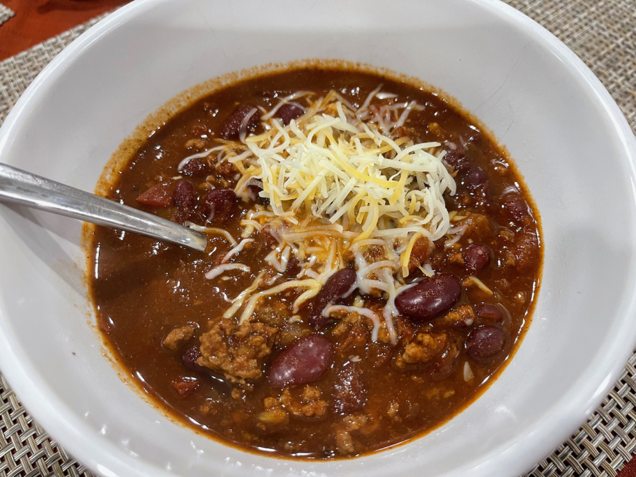

Instant Pot Chili

An instant classic
Ingredients:
- 2lbs lean ground beef
- 2 10oz cans of tomatoes with green chili peppers
- 2 15oz cans dark red kidney beans
- 1 28oz can tomato sauce
- 2 packets of chili seasoning
- 1 big yellow onion
- 1 tablespoon garlic powder
- 1 tablespoon cumin powder
- 1 teaspoon salt
- 1 cup water
- 2 dashes Tobasco if you have it
- 1 tablespoon olive oil
Directions:
- Heat up a tablespoon of olive oil in a pan and dice the onion into small pieces
- Add the onion to the pan and simmer until thoroughly browned
- Once finished, add the onion to the instant pot
- Throw the ground beef into the pan and cook until browned
- Once the beef is done, add the beef along with the juice to the instant pot
- Add the remaining ingredients to the pot and stir until thoroughly combined
- Secure the lid and make sure it's sealed
- Turn to your pressure cook setting and pressure cook for 30 minutes
- Once time is up, vent the steam, allow a couple minutes to cool and serve
Home